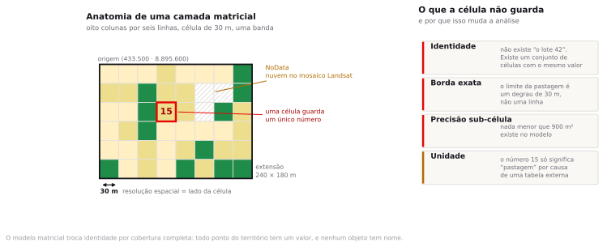
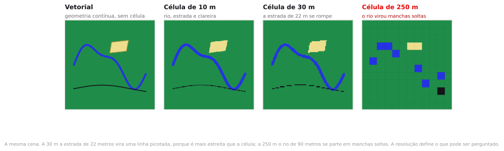
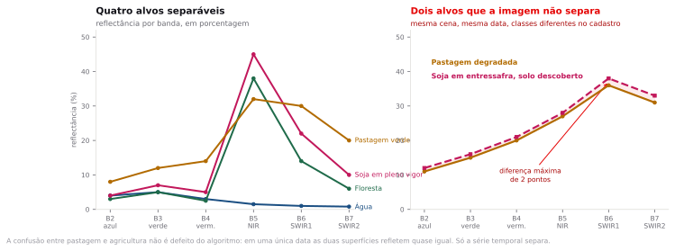
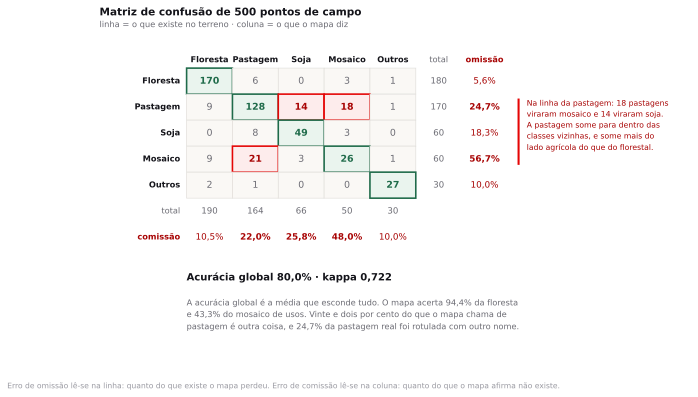
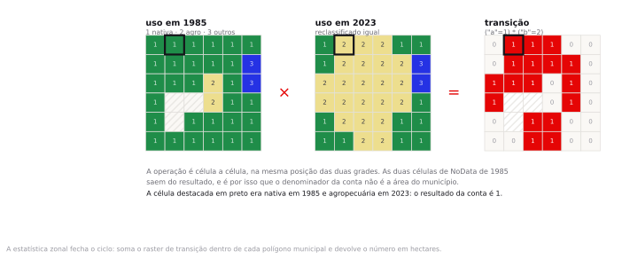

Preparação e dados
A leitura do tema era a cartilha da coleção mais recente do MapBiomas, indicada no fim da aula 8: o que é uma classe de uso da terra e como a acurácia é reportada. São quinze minutos. Se você não leu, leia agora a tabela de acurácia por classe, enquanto a turma abre o QGIS.
Esta é a primeira aula de raster. Nos sete temas anteriores tudo era ponto, linha e polígono, com uma tabela de atributos do lado. A partir de hoje o dado é uma grade de números sem tabela, sem identidade e sem borda, e quase todo hábito que você criou precisa ser revisto.
- uso_terra_1985_treino.tif Uso e cobertura da terra em 1985. GeoTIFF de 1 banda, 3.450 × 1.900 células de 30 m, EPSG:31980, NoData 0. Construído para o exercício.provisório
- uso_terra_2023_treino.tif A mesma grade em 2023, com a mesma legenda e sem falhas de cobertura. Construído para o exercício.provisório
- municipios_ro_2022.gpkg Monte Negro (1101401) e Cacaulândia (1100601), em Rondônia, da malha municipal 2022 do IBGE, com o contorno e a área oficiais. Dois polígonos, EPSG:31980.oficial
- pontos_validacao_treino.gpkg 500 pontos com a classe observada em campo e a classe atribuída pelo mapa. É deles que sai a matriz de confusão. Amostra construída para o exercício.provisório
Só o limite municipal é dado oficial: vem da malha 2022 do IBGE, com a área e o contorno certos de Monte Negro e de Cacaulândia. Os dois GeoTIFF de uso da terra e os 500 pontos de validação foram construídos para a aula. Eles copiam do MapBiomas a resolução de 30 metros, o CRS, os códigos de classe e as cores, e reproduzem o padrão de espinha de peixe da colonização de Rondônia. Os valores de célula não vêm do MapBiomas.
A consequência prática: o hectare que você obtiver hoje não é um dado do MapBiomas e não pode ser citado como tal, em trabalho, em relatório ou em rede social. O que é transferível é o procedimento e a ordem de grandeza dos vieses. Para número publicável sobre esses dois municípios, o caminho é o passo 0.
O MapBiomas não tem endereço fixo de download por município: ou você usa a plataforma, que exporta pelo Google Earth Engine e estava com falha declarada em agosto de 2026, ou baixa o Brasil inteiro, que é um arquivo grande demais para o começo de uma aula. E a amostra de validação de campo não existe em portal público nenhum. Nos dois casos a alternativa seria pular o conteúdo, e a escolha foi construir o dado e dizer que ele foi construído.
Um frigorífico precisa provar ao comprador europeu que a fazenda que fornece o boi não desmatou depois de 2020. O analista abre o MapBiomas, mede, e responde. Que parte dessa resposta é medição e que parte é aposta?
Modelo matricial e sensoriamento remoto
Um satélite não vê rios, lotes ou pastagens. Ele mede quanta energia chega ao sensor em cada pedacinho quadrado do terreno, e grava um número. O mapa de uso da terra que você vai abrir daqui a pouco é uma grade de seis milhões e meio desses números, e cada um deles é o resultado de uma decisão que alguém tomou.
No modelo vetorial, a unidade é a feição: um polígono tem vértices, área, identidade e uma linha na tabela de atributos. No modelo matricial, a unidade é a célula: um quadrado de tamanho fixo que cobre uma posição do território e guarda um valor. Não existe tabela de atributos: existe a grade, e uma legenda que diz o que cada valor significa.

Os cinco termos
A célula é o quadrado elementar. A resolução espacial é o lado da célula no terreno, 30 metros no MapBiomas. A extensão é o retângulo que a grade cobre, dado pelas coordenadas dos cantos. A banda é uma grade completa de valores: uma imagem de satélite tem várias, um mapa de uso da terra costuma ter uma. E o valor é o número gravado na célula, que pode ser uma medida física, como reflectância, ou um código de classe, como 15 para pastagem.
Uma célula de 30 metros cobre 900 metros quadrados, ou 0,09 hectare. Esse número vai aparecer o tempo todo hoje, porque é o fator de conversão entre contagem de células e área. Somar 1.223.499 células e multiplicar por 0,09 é literalmente como se mede desmatamento no Brasil.
Duas consequências mudam o jeito de pensar. A primeira: nada menor que a célula existe. Uma estrada de 6 metros de largura não aparece em uma grade de 30 metros, não porque o satélite não a viu, mas porque a célula que a contém é majoritariamente outra coisa. A segunda: não há borda. O limite entre pastagem e floresta é uma escada de quadrados de 30 metros, e a suavidade que você vê na tela é interpolação do programa de desenho.
Resolução espacial, temporal e espectral
Resolução espacial é o lado da célula. Mas há outras duas que costumam ser confundidas com ela, e a diferença entre as três decide o que a sua análise consegue afirmar.
| Resolução | O que mede | O que ela limita |
|---|---|---|
| Espacial | O lado da célula no terreno | O menor objeto detectável. Landsat entrega 30 m, Sentinel-2 entrega 10 m, MODIS entrega 250 m. |
| Temporal | De quanto em quanto tempo o satélite revisita o mesmo ponto | A menor mudança detectável no tempo. Landsat volta a cada 16 dias, Sentinel-2 a cada 5, MODIS todo dia. |
| Espectral | Quantas faixas do espectro o sensor mede, e quão estreitas | Quais materiais podem ser distinguidos entre si. |

Com célula de 30 metros, qual é a menor área desmatada que você consegue detectar com alguma confiança?
Uma célula isolada, 0,09 hectare, é ruído: pode ser uma clareira, pode ser sombra de nuvem, pode ser erro de classificação. Os sistemas oficiais adotam uma área mínima de mapeamento justamente para não contar esse ruído. O PRODES, do INPE, só considera polígonos de desmatamento a partir de 6,25 hectares, o equivalente a cerca de 70 células. Abaixo disso, o valor gravado na célula não permite distinguir mudança real de ruído de classificação.
NoData e o efeito sobre as médias
Uma grade cobre sempre um retângulo, e o território raramente tem essa forma. Sempre sobram células que não têm valor: fora da área imageada, sob nuvem, sob sombra de nuvem, com falha do sensor. Essas células recebem um valor especial, o NoData, que é um número comum, escolhido para significar "aqui não há informação". No pacote de hoje, o NoData é 0.
O problema é que 0 é um número. Se alguma ferramenta ignorar a declaração de NoData e tratar aquele 0 como valor, ele entra na conta. Uma média que deveria ser 27 vira 19 porque um terço das células valia zero por convenção. Isso não gera erro, não gera aviso e não muda nada visível na tela.
O caso mais frequente na prática não é esse, e é pior: o NoData está declarado corretamente e a ferramenta o ignora do jeito certo, mas o denominador da sua conta continua sendo a área total do município. Você divide uma soma calculada sobre 1.866.532 células por uma área que corresponde a 2.144.650 células, e o resultado sai 13% abaixo do verdadeiro. Ninguém percebe, porque o número continua plausível.
É exatamente o que acontece com Monte Negro no pacote de hoje. O mosaico de 1985 tem nuvem sobre 25.030,6 hectares do município, 13,0% da área. A mesma conta, com dois denominadores defensáveis, devolve 46,3% ou 40,3%. Seis pontos percentuais separam os dois, e ambos podem ser publicados sem mentira, desde que se declare qual denominador foi usado.
Nuvem sobre 13,0% do município em 1985. Você reporta a fração convertida sobre a área total ou sobre a área observada?
Sobre a área observada, e diz isso na frase. Reportar sobre a área total afirma implicitamente que nada mudou embaixo da nuvem, o que é uma hipótese e não uma medida. Reportar sobre a área observada afirma que o comportamento embaixo da nuvem é igual ao do resto, o que também é uma hipótese, mas é a hipótese mais fraca das duas. E as duas exigem que a extensão do buraco apareça no relatório.
De onde vem uma classe de uso da terra
Você não precisa saber processar imagem para usar um produto de sensoriamento remoto, mas precisa saber de onde ele vem, senão não sabe onde ele quebra.
Cada material reflete a luz solar de um jeito próprio em cada faixa do espectro. A clorofila absorve muito no vermelho e reflete muito no infravermelho próximo; a água absorve quase tudo no infravermelho; o solo exposto reflete de forma crescente do azul ao infravermelho médio. O perfil de reflectância de um alvo ao longo das bandas é a sua assinatura espectral, e é a matéria-prima de qualquer classificação.
Combinar bandas amplifica contrastes. O índice de vegetação por diferença normalizada, o NDVI, é a razão entre a diferença e a soma do infravermelho próximo com o vermelho. Vegetação vigorosa dá valores altos, próximos de 0,8; solo exposto dá valores baixos; água dá valores negativos. É uma conta de duas bandas que separa surpreendentemente bem o que é verde do que não é.

A saída para o problema da direita não é espacial nem espectral: é temporal. Um talhão de soja fica descoberto em julho e verde em janeiro; uma pastagem degradada fica parecida o ano inteiro. É por isso que o MapBiomas não classifica uma imagem, e sim um mosaico anual construído a partir de dezenas de cenas, com variáveis derivadas da série temporal. E é por isso que a acurácia do produto varia tanto entre biomas: onde a estação seca é longa e a nuvem é rara, a série é limpa; na Amazônia ocidental, não é.
Classificar, e depois desconfiar do resultado
Classificar é atribuir a cada célula um rótulo, a partir dos seus valores nas bandas e das amostras de treinamento que o analista forneceu. Há muitos algoritmos, e a escolha entre eles importa menos do que quase todo curso sugere. O que importa é a etapa seguinte.
Depois de classificar, sorteia-se um conjunto de pontos, visita-se cada um em campo ou em imagem de altíssima resolução, e anota-se o que existe ali de verdade. Cruzando a classe observada com a classe mapeada, monta-se a matriz de confusão. É ela que diz quanto a classificação acerta, classe por classe; sem ela, o mapa é uma afirmação que ninguém verificou.

Omissão e comissão
O erro de omissão mede o que o mapa deixou de fora de uma classe, e se lê na linha da referência. O erro de comissão mede o que o mapa colocou dentro de uma classe indevidamente, e se lê na coluna do mapeado. Uma classe pode ter omissão baixa e comissão alta ao mesmo tempo: é o caso de um mapa que rotula pastagem generosamente, pegando quase toda a pastagem real e mais um bocado de outras coisas junto.
A acurácia global é a soma da diagonal dividida pelo total. Nos 500 pontos do pacote de hoje, ela vale 80,0%. Esse número diz pouco, porque é uma média ponderada pela frequência das classes: como floresta é a classe mais comum e a mais fácil, ela puxa a média para cima e esconde as classes que interessam.
| Classe | Omissão | Comissão | Leitura |
|---|---|---|---|
| Formação florestal | 5,6% | 10,5% | Confiável nas duas direções |
| Soja | 18,3% | 25,8% | Um quarto do que o mapa chama de soja não é soja |
| Pastagem | 24,7% | 22,0% | Um quarto se perde e um quinto é intruso |
| Mosaico de usos | 56,7% | 48,0% | Pior que cara ou coroa em uma das direções |
| Outros | 10,0% | 10,0% | Água e área urbana são fáceis |
Olhe a linha da pastagem na figura 4. Das 170 pastagens de referência, 18 foram mapeadas como mosaico de usos e 14 como soja. Só 9 foram confundidas com floresta. Ou seja: a pastagem some para dentro do lado agrícola da legenda, não para dentro do lado nativo. Isso tem uma consequência direta e pouco intuitiva: se você agrupar pastagem, soja e mosaico em uma única classe "agropecuária", boa parte desse erro se cancela, e a estimativa agregada fica muito melhor do que a de qualquer uma das três isoladamente.
Um produto de sensoriamento remoto declara 80% de acurácia global. Isso é bom?
A pergunta está mal formulada, e é assim que ela chega na sua mesa. Depende da classe que você vai usar e do lado do erro que te machuca. Para um relatório de área florestal, 80% global com 5,6% de omissão na floresta é ótimo. Para embargar uma fazenda por pastagem ilegal, 22% de comissão em pastagem significa que um em cada cinco autos de infração baseados só no mapa cai. O número que importa nunca é o global.
Álgebra de mapas e reclassificação
Como não há tabela de atributos, não há consulta por atributo. A operação equivalente no mundo matricial é a álgebra de mapas: aplicar uma expressão aritmética ou lógica célula a célula, na mesma posição de duas ou mais grades, produzindo uma grade nova.
A regra é rígida e vale a pena decorar: as grades precisam ter a mesma resolução, a mesma extensão e o mesmo sistema de coordenadas. Se não tiverem, o programa reamostra sem perguntar, e reamostrar dado categórico cria nas células de borda valores de classe que não existiam no original.
A reclassificação é o caso mais simples: uma tabela que mapeia intervalos de valor de entrada em valores de saída. É o que transforma as oito classes do produto original nas três categorias com que a sua pergunta trabalha. Você vai fazer isso no passo 4, e é uma decisão analítica com consequência, não uma formalidade: escolher onde cada classe cai já responde metade da pergunta.

A classe "mosaico de usos" existe porque o classificador não conseguiu separar pastagem de agricultura naquele pedaço. Ao reclassificar, você a coloca em "agropecuária" ou em "outros"?
O MapBiomas a coloca em agropecuária no seu nível 1, e há bom argumento para isso: mosaico de usos é área antropizada, ninguém discute. Mas repare no que a escolha faz com o seu número. Em Cacaulândia, contar o mosaico como agropecuária leva a conversão de 50,7% para 56,5%. Quase seis pontos de diferença saem de uma decisão de legenda, não de uma medição. Você vai reproduzir os dois números no passo 7.
Estatística zonal, a ponte de volta
Todo o trabalho até aqui produz grades, e grade não é unidade de gestão: ninguém multa uma célula nem aprova crédito para um pixel. A pergunta é sempre sobre um município, uma fazenda, uma bacia, um assentamento.
A estatística zonal é a operação que fecha o ciclo: recebe um conjunto de polígonos e uma grade, e devolve, para cada polígono, uma estatística das células que caem dentro dele. Contagem, soma, média, mínimo, máximo, desvio-padrão. É a junção entre o mundo matricial e o mundo vetorial, e o resultado volta a ser uma tabela de atributos, com uma linha por polígono.
Qual célula está "dentro" do polígono?
Uma célula de 30 metros na borda do município está parcialmente dentro e parcialmente fora. A convenção usual, e a que o QGIS adota, é incluir a célula quando o seu centro cai dentro do polígono. Isso significa que a área somada pela estatística zonal nunca bate exatamente com a área geométrica do polígono, e a diferença cresce quando o polígono é pequeno ou muito recortado. Em Cacaulândia, o IBGE publica 1.961,778 km², o polígono medido em EPSG:31980 dá 1.960,221 km² e a contagem de células devolve 1.959,961 km². Três números para o mesmo município, e a diferença entre o primeiro e o último é de 0,11%. Para um lote de dois hectares, a mesma convenção pode ser toda a resposta.
Com contagem e soma você chega em qualquer coisa. Se a grade vale 1 onde houve conversão e 0 onde não houve, a soma é o número de células convertidas e a contagem é o número de células válidas. Multiplique a soma por 0,09 e você tem hectares. Divida uma pela outra e você tem a fração. É toda a aritmética da aula.
Dada uma afirmação baseada em um produto de sensoriamento remoto, a prova pode pedir que você identifique se o erro relevante é de omissão ou de comissão e qual decisão ele compromete; que aponte o efeito de NoData ou de resolução sobre um número apresentado; ou que descreva a sequência de operações matriciais necessária para responder a uma pergunta de mudança de uso da terra, incluindo a escolha de denominador.
Medindo a conversão em Cacaulândia
Os números abaixo são exatos e foram conferidos no QGIS 4.2.0. Se o seu resultado divergir em mais de uma unidade na última casa, algum parâmetro saiu diferente, e vale parar para descobrir qual.
Baixar o raster de uso da terra no MapBiomas
Os dois rasters do pacote são construídos para o exercício, e este passo é o caminho para o dado de verdade. O MapBiomas não entrega recorte por município por endereço fixo: ou você usa a plataforma, ou baixa o Brasil inteiro e recorta no QGIS. Os dois caminhos estão abaixo. Faça o que funcionar no dia; a estrutura do roteiro é a mesma nos dois casos.
Peça o ano de 1985 e o de 2023, que são os dois anos do pacote da aula. A coleção 10.1 vai até 2024; se você baixar 2024, os seus números vão diferir dos do roteiro por um ano de mudança, e não por erro.
Caminho A · pela plataforma, com recorte por município
- Abra plataforma.brasil.mapbiomas.org. Feche a Nota informativa no botão Continuar.
- No painel da esquerda, em Temas, confirme que está marcado COBERTURA e, dentro dele, Cobertura 30m (40 anos), coleção 10.1, e a opção Cobertura.
- No rodapé do painel da esquerda, clique em Downloads. Abre a janela Download de Mapas (GeoTiffs).
- A lista Território do bloco de cima só traz os territórios grandes, e não tem município. Role a janela até Gerar mapa personalizado (GeoTiff) e clique.
- Em território, procure
Monte Negroe depoisCacaulândia, os dois em Rondônia. Em subtema, escolha Cobertura. Em ano, escolha 1985 na primeira vez e 2023 na segunda. - Clique em Download (.TIFF) e salve em
InfoGeo/tema09_raster/dados_brutos/, com os nomesuso_terra_1985.tifeuso_terra_2023.tif. São quatro arquivos no total, dois por município.
A própria plataforma avisa, em nota informativa, que as tarefas de exportação de GeoTIFF pelo Google Earth Engine podem falhar. Se falhar, use o caminho B.
Caminho B · link direto do Brasil inteiro e recorte no QGIS
- Baixe o mosaico anual do Brasil da coleção 10, um arquivo por ano. O endereço do ano de 2023 é o abaixo; para outro ano, troque o número no fim do nome do arquivo e confirme que o link abre antes de iniciar o download.
https://storage.googleapis.com/mapbiomas-public/initiatives/brasil/collection_10/lulc/coverage/brazil_coverage_2023.tif
- É o Brasil inteiro em 30 metros, então é um arquivo grande. Confira o tamanho que o navegador mostra antes de deixar baixar, e faça isso fora do horário de aula.
- Carregue o
.tifno QGIS junto communicipios_ro_2022.gpkg, que já é a malha oficial do IBGE. - Rode Raster ▸ Extraction ▸ Clip Raster by Mask Layer. Em Input layer, o mosaico; em Mask layer,
municipios_ro_2022; marque Match the extent of the clipped raster to the extent of the mask layer. - Em Assign a specified NoData value to output bands, ponha
0, que é o NoData da legenda do MapBiomas. - Salve como
uso_terra_2023.tifemdados_tratados/. Repita para o ano de 1985. - O mosaico do MapBiomas vem em
EPSG:4326. Reprojete cada recorte paraEPSG:31980com Raster ▸ Projections ▸ Warp (Reproject), com Resampling method em Nearest neighbour — em raster de classe, qualquer outra reamostragem inventa classe que não existe.
Os códigos de classe e as cores oficiais estão em Detalhamento das Legendas, na página Coleções MapBiomas. Baixe o arquivo de legenda de lá em vez de digitar cor por cor.
O GeoTIFF que você baixou abre em EPSG:4326, com uma banda e valores que são códigos de classe do MapBiomas: 3, 15, 21, 33, 39 e 48 aparecem em Rondônia. Se abrir com três bandas e valores de 0 a 255, você baixou a imagem de visualização em vez do dado.
Tudo, menos o procedimento. A grade do MapBiomas vem em EPSG:4326, com outra origem e outro número de células, e o NoData dele não é nuvem de 1985: é área fora do recorte. Os hectares que você vai obter não serão os do roteiro, e é esse o ponto. Se for citar número em trabalho, cite o do MapBiomas, com a coleção e o ano na frase, e nunca o do arquivo _treino.
Abrir os dois rasters e interrogar as propriedades
- Crie a pasta
InfoGeo/tema09_rastere salve um projeto novo em Project ▸ Save As. - Defina o CRS do projeto como
EPSG:31980 — SIRGAS 2000 / UTM zone 20S, no botão do canto inferior direito. Rondônia está no fuso 20. - Arraste
uso_terra_1985_treino.tif,uso_terra_2023_treino.tifemunicipios_ro_2022.gpkgpara dentro da janela. - Clique com o botão direito em
uso_terra_1985_treino, escolha Properties e abra a aba Information.
Você deve encontrar exatamente isto: dimensões 3450 × 1900, tamanho de pixel 30 × −30, uma banda, tipo de dado Byte, valor de NoData 0, CRS EPSG:31980, e a extensão de 433.500 a 537.000 em X e de 8.838.600 a 8.895.600 em Y. São 6.555.000 células cobrindo 103,5 por 57 quilômetros, o retângulo que contém os dois municípios com cerca de um quilômetro de folga em cada lado.
Qual a resolução? Qual a extensão? Quantas bandas? Qual o tipo de dado? Qual o valor de NoData? Um arquivo que não responde às cinco não deveria entrar na análise. Faça disso um hábito, do mesmo jeito que no tema 2 você passou a perguntar o CRS antes de medir qualquer coisa.
Aplicar a paleta oficial e olhar o mapa
Sem legenda a grade aparece como uma mancha cinza; a paleta oficial é o que permite ler nela o padrão de ocupação de Rondônia.
- Abra Properties do raster de 2023 e vá à aba Symbology.
- Em Render type, escolha Paletted/Unique values.
- Clique em Classify. O QGIS varre a banda e lista os oito valores presentes em 2023. No raster de 1985 aparecem sete: a soja, código 39, ainda não existia na cena.
- Ajuste rótulo e cor de cada um conforme a tabela abaixo, que é a legenda oficial do MapBiomas.
- Repita para o raster de 1985, ou use Style ▸ Copy Style e Paste Style.
| Valor | Classe | Cor | Categoria operacional |
|---|---|---|---|
| 3 | Formação florestal | #1f8d49 | Vegetação nativa |
| 11 | Campo alagado e área pantanosa | #519799 | Vegetação nativa |
| 15 | Pastagem | #edde8e | Agropecuária |
| 21 | Mosaico de usos | #ffefc3 | Agropecuária |
| 24 | Área urbanizada | #d4271e | Outros |
| 33 | Rio, lago e oceano | #2532e4 | Outros |
| 39 | Soja | #f5b3c8 | Agropecuária |
| 48 | Outras lavouras perenes | #e6ccff | Agropecuária |
- Deixe
municipiosno topo, com preenchimento vazio e contorno preto de 0,6 mm. - Alterne a visibilidade entre 1985 e 2023 algumas vezes.
Em 1985 você deve ver uma mancha verde quase contínua, cortada por uma faixa clara leste-oeste e por alguns riscos verticais curtos: a rodovia e as primeiras linhas do projeto de assentamento. Em 2023, os riscos viraram faixas largas que quase se tocam, no padrão de espinha de peixe. Restam a mata ciliar ao longo dos rios e dois blocos de floresta nas pontas da cena.
Achar o buraco de 1985 antes de fazer qualquer conta
Se você deu zoom na parte oeste da cena de 1985, viu manchas brancas com contorno arredondado. É nuvem, e o próximo passo é medir quanto ela custa.
- Abra a Processing Toolbox com
Ctrl+Alt+Te procurenative:zonalstatisticsfb, que aparece como Zonal statistics. - Rode a primeira vez sobre o raster de 1985.
- Input layer
- municipios
- Raster layer
- uso_terra_1985_treino
- Raster band
- Band 1
- Output column prefix
- c85_
- Statistics to calculate
- Count
- Zonal statistics
- dados_tratados/mun_a.gpkg
- Rode a segunda vez sobre o raster de 2023, mas agora com
mun_acomo Input layer. Encadear as rodadas é o que mantém as duas colunas na mesma tabela.
- Input layer
- mun_a
- Raster layer
- uso_terra_2023_treino
- Raster band
- Band 1
- Output column prefix
- c23_
- Statistics to calculate
- Count
- Zonal statistics
- dados_tratados/mun_b.gpkg
- Abra a tabela de atributos de
mun_be compare as duas colunas.
| Município | Células em 2023 | Células em 1985 | Sem dado | Fração |
|---|---|---|---|---|
| Cacaulândia | 2.177.734 | 2.164.754 | 12.980 | 0,6% |
| Monte Negro | 2.144.650 | 1.866.532 | 278.118 | 13,0% |
Cacaulândia: c23_count = 2.177.734 e c85_count = 2.164.754. Monte Negro: 2.144.650 e 1.866.532. Se as duas colunas vierem iguais nos dois municípios, o QGIS está contando o NoData como valor: confira em Properties ▸ Information do raster de 1985 que o valor de NoData é 0.
Se você marcar Mean nesta rodada, o QGIS vai calcular a média dos códigos de classe e devolver algo como 9,7. Não existe uso da terra 9,7. Média só faz sentido sobre grade numérica contínua, e a de hoje é categórica: só contagem e soma têm significado.
Reclassificar as oito classes em três
A pergunta do tema não distingue soja de pastagem: distingue vegetação nativa de área antrópica. Reduzir a legenda a três categorias é o que torna a álgebra do passo seguinte legível.
- Na Processing Toolbox, procure
native:reclassifybytable, que aparece como Reclassify by table. - Em Reclassification table, clique no botão de reticências e monte oito linhas, com os limites deslocados de meia unidade para não deixar dúvida sobre a borda.
Minimum Maximum Value -- classe de origem 2,5 3,5 1 -- 3 formação florestal → nativa 10,5 11,5 1 -- 11 campo alagado → nativa 14,5 15,5 2 -- 15 pastagem → agropecuária 20,5 21,5 2 -- 21 mosaico de usos → agropecuária 38,5 39,5 2 -- 39 soja → agropecuária 47,5 48,5 2 -- 48 lavouras perenes → agropecuária 23,5 24,5 3 -- 24 área urbanizada → outros 32,5 33,5 3 -- 33 rio e lago → outros
- Raster layer
- uso_terra_1985_treino
- Band number
- 1
- Output no data value
- 0
- Range boundaries
- min < value ≤ max
- Use no data when no range matches value
- marcado
- Output data type
- Byte
- Reclassified raster
- dados_tratados/rec_1985.tif
- Repita para 2023, salvando como
rec_2023.tif. - Confirme que as duas camadas novas entraram no projeto com os nomes
rec_1985erec_2023. O nome importa: é ele que você vai digitar na expressão do passo 5.
Aplique Paletted/Unique values nas duas camadas novas e clique em Classify. Devem aparecer três valores, 1, 2 e 3, e nada mais. Se aparecer um 0 na lista, a opção de NoData para valores sem correspondência não foi marcada.
A camada de transição, em uma linha de álgebra
Queremos marcar as células que eram vegetação nativa em 1985 e são agropecuária em 2023. Nenhuma outra combinação interessa.
- Na Processing Toolbox, procure
native:rastercalc, que aparece como Raster calculator dentro de Raster analysis. - Em Input layers, marque
rec_1985erec_2023. - Escreva a expressão exatamente assim, com aspas duplas e o sufixo de banda:
("rec_1985@1" = 1) * ("rec_2023@1" = 2) -- 1 onde as duas condições valem, 0 no resto
- Deixe extensão, tamanho de célula e CRS em branco, para o algoritmo herdá-los das camadas de entrada.
- Salve como
dados_tratados/transicao.tif.
Cada comparação devolve 1 quando verdadeira e 0 quando falsa. Multiplicar as duas dá 1 apenas quando as duas são verdadeiras, que é exatamente o comportamento do "e" lógico. O QGIS aceita AND também, e o resultado é o mesmo. A multiplicação tem a vantagem de deixar óbvio, na leitura, que o NoData se propaga: qualquer célula sem dado em uma das entradas fica sem dado na saída.
Estilize transicao com Paletted/Unique values, deixando 0 em cinza-claro e 1 em vermelho. O vermelho deve desenhar a espinha de peixe inteira, deixando de fora os rios, as duas cidades, as manchas de floresta remanescente e o buraco de nuvem no oeste, que continua sem dado.
Estatística zonal sobre a transição
- Rode
native:zonalstatisticsfbmais uma vez.
- Input layer
- mun_b
- Raster layer
- transicao
- Raster band
- Band 1
- Output column prefix
- tr_
- Statistics to calculate
- Count, Sum
- Zonal statistics
- dados_tratados/conversao.gpkg
- Abra a tabela de atributos do resultado.
Cacaulândia: tr_count = 2.164.754 e tr_sum = 1.223.499. Monte Negro: tr_count = 1.866.532 e tr_sum = 863.932. Repare que o count repete os valores do passo 3: são as células válidas nos dois anos, porque o NoData de 1985 se propagou pela multiplicação.
Hectares, e os dois denominadores defensáveis
- Entre em modo de edição na camada
conversaoe abra o Field Calculator comCtrl+I. - Crie
conv_ha, decimal com precisão 1:
"tr_sum" * 900 / 10000 -- células × 900 m² ÷ 10.000 = hectares
- Crie
frac_obs, a fração sobre o que foi observado:
"tr_sum" / "tr_count" * 100
- Crie
frac_mun, a fração sobre a área do município. O denominador vem da contagem de 2023, que cobre o município inteiro:
"tr_sum" / "c23_count" * 100
- Salve as edições e desligue o modo de edição.
| Município | Convertido (ha) | Sobre o observado | Sobre o município | Diferença |
|---|---|---|---|---|
| Cacaulândia | 110.114,9 | 56,5% | 56,2% | 0,3 p.p. |
| Monte Negro | 77.753,9 | 46,3% | 40,3% | 6,0 p.p. |
Cacaulândia tem 196.177,8 hectares pelo IBGE, e a contagem de células devolve 195.996,1. No raster da aula, entre 1985 e 2023, 110.114,9 hectares passaram de vegetação nativa a agropecuária, ou 56,5% do que foi observado nos dois anos, e a vegetação nativa caiu de 95,1% para 38,5% do território. É o resultado correto do procedimento sobre um arquivo construído: para citar Cacaulândia em trabalho, refaça a conta com o GeoTIFF do passo 0.
Faça mais uma conta, para ver o peso de uma decisão de legenda. Volte ao passo 5 e gere uma segunda transição excluindo o mosaico de usos do lado agropecuário, com a expressão abaixo, e rode a estatística zonal de novo.
("rec_1985@1" = 1) * (("uso_terra_2023_treino@1" = 15) OR
("uso_terra_2023_treino@1" = 39) OR
("uso_terra_2023_treino@1" = 48))
Sem o mosaico, Cacaulândia converteu 98.687,4 hectares, ou 50,7%. São 11.427,5 hectares e 5,8 pontos percentuais que dependem inteiramente de onde você coloca uma classe cuja acurácia de usuário é 52,0%. Nenhuma célula mudou de valor entre as duas contas.
Ler o número junto com a matriz de confusão
Você tem 110.114,9 hectares. Falta a segunda metade do trabalho, que é dizer quanto esse número vale.
- Carregue
pontos_validacao_treino.gpkg. - Abra a tabela de atributos e agrupe: use o painel Statistics ou exporte para uma planilha e monte a tabulação cruzada de
classe_refporclasse_map. Você deve reproduzir a figura 4. - Localize a coluna da pastagem: o mapa atribuiu pastagem a 164 pontos, e o campo encontrou pastagem em 170.
A razão entre os dois totais é o ajuste mais simples que existe para uma estimativa de área. Em Cacaulândia, o mapa aponta 102.797,6 hectares de pastagem em 2023. Corrigido pela razão 170 sobre 164, o valor sobe para 106.558,5 hectares, cerca de 3,7% a mais.
- Exporte a tabela final: botão direito na camada, Export ▸ Save Features As, formato Comma Separated Value, arquivo
saida/conversao_municipios.csv.
A tabulação cruzada tem 500 pontos no total e 400 na diagonal, o que dá a acurácia global de 80,0%. A linha da pastagem soma 170 e a coluna, 164. O CSV exportado precisa abrir com uma linha por município e as colunas conv_ha, frac_obs e frac_mun preenchidas nas duas.
O número tem três partes, e só a primeira sai do software
A primeira é a medição: 110.114,9 hectares, reproduzível por qualquer pessoa com os mesmos arquivos. A segunda é a convenção: qual denominador, qual legenda, qual ano de referência, e nenhuma delas está no dado. A terceira é a incerteza: 24,7% de omissão e 22,0% de comissão na pastagem, que ninguém pode remover, só declarar. Um laudo que apresenta a primeira sem as outras duas não está errado, mas o corte esconde exatamente a margem que poderia derrubar a conclusão, e por isso costuma favorecer quem encomendou o laudo.
Exercício
Você já tem os dois municípios na mesma tabela. Agora olhe para Monte Negro.
- Anote a fração convertida de Monte Negro nos dois denominadores e compare com a de Cacaulândia.
- Cacaulândia converteu 56,5% e Monte Negro, 46,3%. Dez pontos de diferença entre dois municípios vizinhos, de área quase igual, com o mesmo tipo de solo, a mesma rodovia e o mesmo ciclo de colonização.
Responda, em três frases:
- Essa diferença é real ou é artefato? Aponte pelo menos duas características dos arquivos que você entregaria como prova.
- Que informação adicional resolveria a dúvida de vez? Seja específico: nome do dado, fonte e o que exatamente você olharia nele.
- Se você tivesse que responder hoje, sem essa informação adicional, qual dos dois números colocaria em um relatório e com que ressalva?
conv_ha, frac_obs e frac_mun para os dois municípios, mais as três frases. Poste no fórum do tema no Blackboard antes do fim da aula.Fechamento
No raster desta aula, 110.115 hectares de vegetação nativa viraram agropecuária em Cacaulândia entre 1985 e 2023. Pouco mais da metade do município. O intervalo de confiança desse número não vem no arquivo.
A medição não está em disputa: qualquer pessoa com os mesmos dois rasters chega ao mesmo valor, célula por célula. A etiqueta está. A classe pastagem tem 24,7% de omissão e 22,0% de comissão, e a classe mosaico de usos, que responde por 11.427 hectares da conta, acerta metade das vezes. Quem responde "110.115 hectares" e para por aí entregou metade do serviço.
O que discutir com a turma
Três perguntas para os últimos minutos, todas com resposta em aberto.
O regulamento europeu de produtos livres de desmatamento exige provar que a área não foi desmatada depois de 31 de dezembro de 2020. Um produto de 30 metros com 22% de comissão em pastagem serve de prova?
Serve para triagem e não serve para condenação. A diferença prática é enorme: com o mapa, você seleciona as fazendas que precisam ser olhadas de perto, e reduz o custo da verificação em duas ordens de grandeza. Sem uma etapa de verificação por imagem de alta resolução ou visita, uma em cada cinco exclusões seria injusta. E cada exclusão injusta é um processo.
Quem deveria pagar pela validação de campo: quem produz o mapa, quem usa ou quem é afetado por ele?
Vale notar quem paga hoje. O MapBiomas publica a matriz de confusão porque decidiu publicar, não porque alguém o obriga. Boa parte dos produtos comerciais de monitoramento não publica nada equivalente, e o comprador raramente exige. Enquanto validação for custo voluntário do produtor do dado, ela vai continuar sendo a primeira coisa a sair do orçamento.
Se aumentar a resolução para 10 metros com o Sentinel-2, a acurácia melhora?
Melhora para objetos pequenos e piora, às vezes, para classes de textura. Célula menor significa mais variabilidade dentro de cada classe e mais confusão entre classes parecidas. E a série do Sentinel-2 começa em 2015, o que não ajuda quem precisa de uma linha de base em 1985. Trocar de sensor troca de problema.
- Você recebeu a classificação pronta e não a produziu. Não discutimos escolha de amostras de treinamento, seleção de algoritmo nem filtro temporal, que é onde a maior parte da qualidade de um produto como o MapBiomas realmente se decide.
- A matriz de confusão do pacote tem 500 pontos sorteados sobre a área toda. Uma matriz honesta precisa de amostragem estratificada por classe e de intervalo de confiança em cada célula, e nada disso foi feito aqui.
- Medimos conversão entre dois anos. O caminho entre eles ficou de fora: uma célula que virou pasto em 1996, foi abandonada, regenerou e voltou a ser aberta em 2015 aparece igual a uma que foi desmatada uma vez só.
- A área foi calculada como número de células vezes 900 metros quadrados, o que é área projetada. Em terreno inclinado, a superfície real é maior, e em algumas regiões de relevo forte a diferença passa de 10%.
- Nada aqui distingue desmatamento legal de ilegal. Isso exige cruzar com o Cadastro Ambiental Rural, com as datas de autorização de supressão e com o Código Florestal, e é uma pergunta jurídica antes de ser uma pergunta de raster.
- Os dois rasters e os 500 pontos de validação foram construídos para este exercício. Copiam do MapBiomas a resolução, o CRS, os códigos de classe e as cores, e imitam o padrão de espinha de peixe de Rondônia, mas os valores de célula não vêm do MapBiomas. Os 110.114,9 hectares são o resultado correto de um procedimento correto sobre um arquivo inventado, e não descrevem Cacaulândia. Só o limite municipal é oficial. O caminho para o dado publicável está no passo 0.
- A matriz de confusão do pacote foi montada com totais escolhidos para a aula. Ela mostra a forma que um relatório de acurácia tem e a ordem de grandeza que o MapBiomas reporta na Amazônia, e não é a acurácia medida da coleção 10.
A pergunta é "quanta gente chega ao hospital em trinta minutos?", e ela retoma criticamente o buffer de 600 metros do tema 5. É a última aula de conteúdo, fecha o curso pelo lado da comunicação cartográfica, e é nela que a APS 3 é lançada.